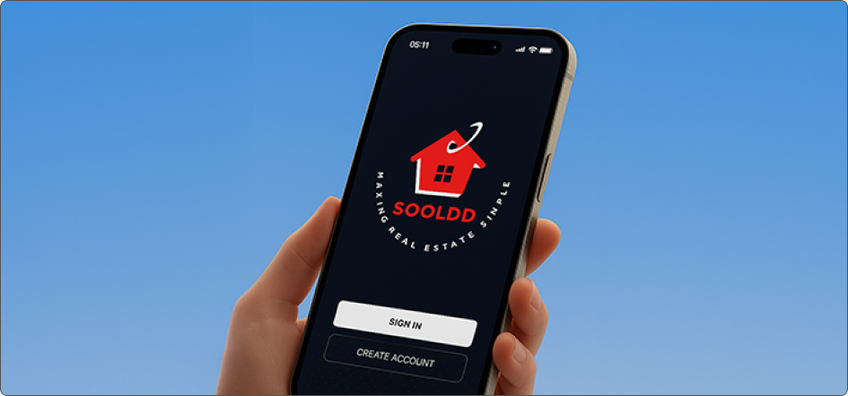
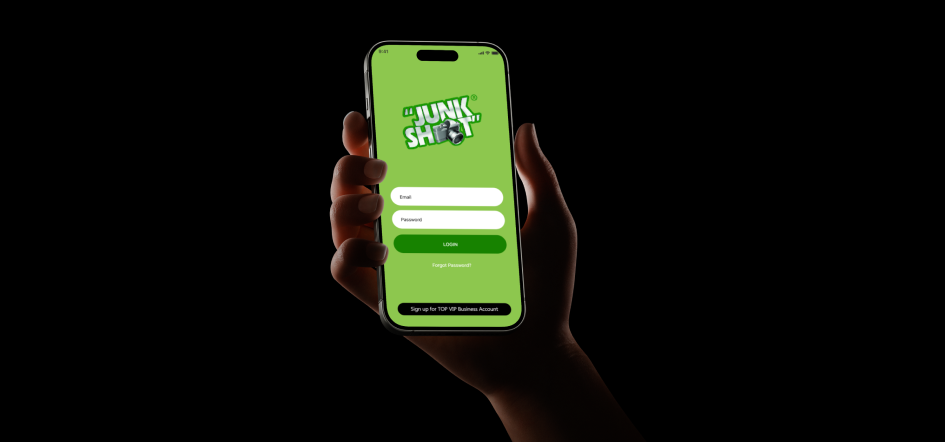
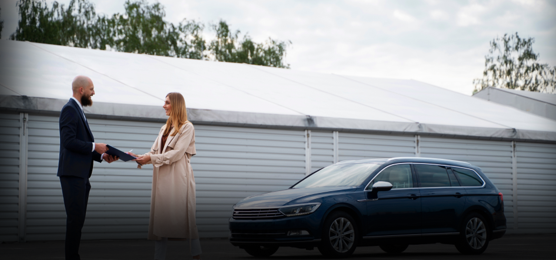
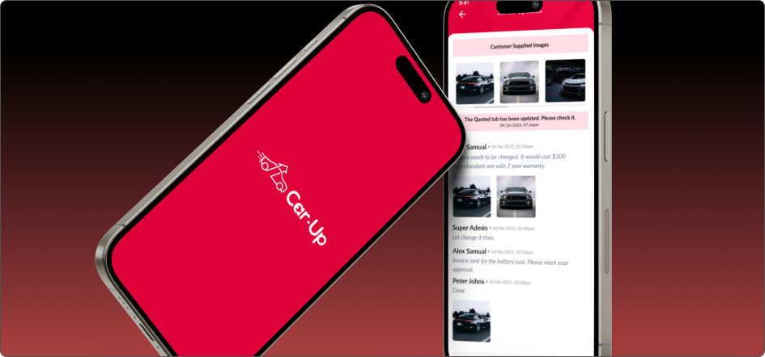

Executive Insights on AI & Technology Strategy
Join business leaders gaining practical insights on AI adoption, software strategy, and digital transformation.
Endorsed by the trust of clients worldwide

Giovanni Livia has over 20 years of experience as an independent AI & software solutions consultant, helping businesses adopt digital transformation solutions and make technology decisions through professional advice. As a business leader, he specializes in helping enterprises evaluate, understand, and adopt AI/software solutions. Giovanni is highly recognized for providing strategic guidance to bring right fit clients and ensure their onboarding into AI/digital projects. He supports the transition of solutions from strategy to execution by connecting businesses with trusted implementation partners.
Helping enterprises and growth-stage businesses make confident technology decisions across AI adoption, software strategy, and digital transformation.
Gio helps business leaders and entrepreneurs clarify where AI and software actually fit in their business, what to prioritize, and how to guide them to the right partner for solution adoption—with clarity.
By exploring the possibilities of AI and technology within your business, Gio helps you integrate them with a clear strategic direction. Rather than evaluating your project’s technical aspects, he guides you deep into the leadership mandate and walks you through the need for transformation with informed decisions, improved margins, and reshaped strategies. Gio ensures your business can decide which AI and software initiatives make sense, scope them appropriately, and when to involve technical teams in the process. Here’s what these decisions typically span:
Gio supports organizations at the strategy layer of AI and digital transformation, helping leaders turn their ideas into informed decisions with clarity.
Gio helps teams identify realistic use cases, user groups, and success metrics for AI assistants, eliminating hype-led projects.
He maps current manual workflows, identifies automation opportunities, and develops business cases without diving into code.
He guides leaders on the insights that matter, data readiness, and where AI analytics can improve business decisions.
With advice on which pilots to start with, how to measure success, and how to communicate the plan internally, he shapes AI adoption.
Giovanni works with business leaders to analyze, plan, and guide technology initiatives that drive long-term operational and strategic value.
By providing expert guidance, he clarifies when custom development is ideally suited to the partnering solutions provider rather than using your current tools.
Gio works with stakeholders to learn and analyze the systems to be modernized first to achieve maximum business impact.
He explains the options, such as project-based, dedicated teams, and long-term partnerships, in business language.
He facilitates strategic sessions to evaluate current-state readiness and build a practical transformation roadmap.
Giovanni Livia has been in the digital transformation industry for over two decades, serving businesses of all sizes with the best AI and technology consulting solutions, as well as strategic advice on choosing the right digital transformation partner. He started his career in sales/client-facing roles. He had seen the evolution of technology and invested time in learning AI and digital transformation concepts at the decision-maker level to analyze risk, value, and change management. He helps leadership teams reduce technology risk and make futuristic, scalable decisions. His advisory work emphasizes aligning technology investments with long-term business growth.
Giovanni frequently collaborates with established delivery teams such as NewAgeSysIT when organizations are ready to move from strategy to implementation. Presently, he acts as a bridge between businesses and digital solutions providers, helping businesses simplify complex solution options, navigate technology shifts from early web systems to modern AI-driven solutions by choosing the right partner.
He has supported organizations with strategic solutions on:
He works on connecting the business vision with technology implementation, enabling businesses to redefine innovation with a remarkable operational and commercial impact.
Here’s a walkthrough of how Giovanni has helped businesses through advisory-led engagements and practical AI-strategic solutions to drive measurable efficiency.
Advised on strategy and implementation roadmap for an AI-driven chatbot system to improve customer engagement, automate support, and streamline communication.

Led strategic planning for AI-powered image analysis to modernize pricing logic and support operational decision-making.

Helped with the adoption strategy for AI-led visual inspection to minimize evaluation time, scale process efficiency, and speed up assessments.

Alongside AI initiatives, Gio provides high-level strategic guidance on software architecture and platform stability, helping businesses make confident technology decisions that drive business growth and strong customer impact.
Provided strategic guidance on platform structure and workflow optimization for a digital auto-repair service ecosystem.

Advised on system architecture to streamline operational processes and data flow of on-demand beauty app.
Helped frame product strategy and experience design for an evolving mental health support platform.
Giovanni regularly shares his insights on AI adoption, software innovation, and digital transformation to help business leaders adapt to the emerging technology trends.
Join business leaders gaining practical insights on AI adoption, software strategy, and digital transformation.
Schedule a strategy consultation with Giovanni to pave the right technology path for your business success.